長期トレンド
JKMとJEPXシステムプライスの推移グラフ
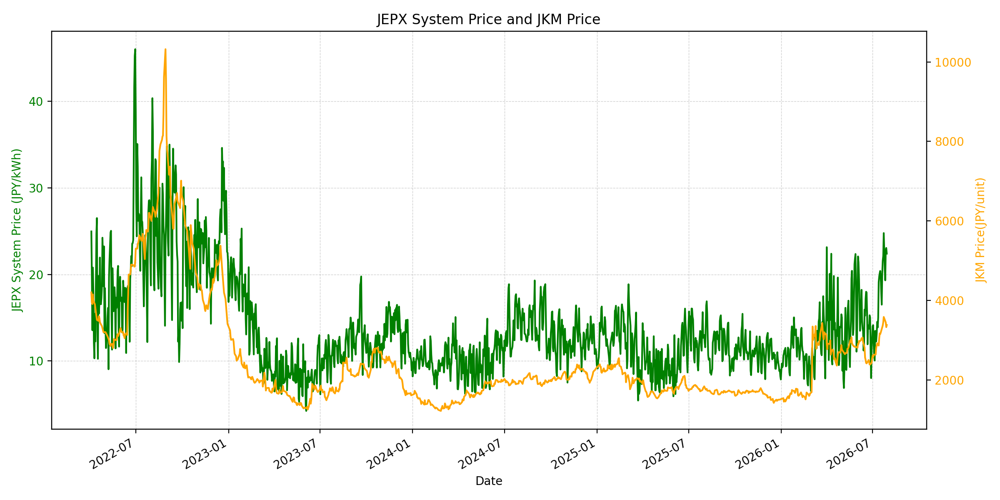
WTIの推移グラフ
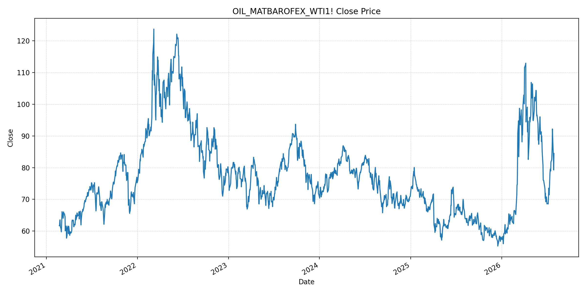
JEPXエリアプライスグラフ（直近一年分）
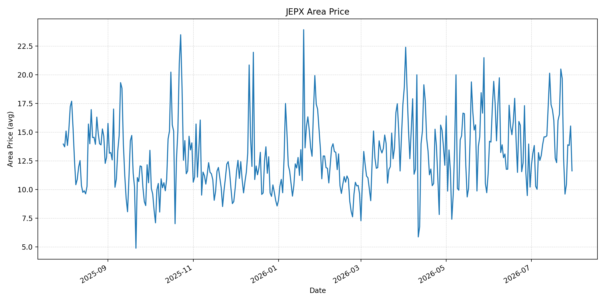
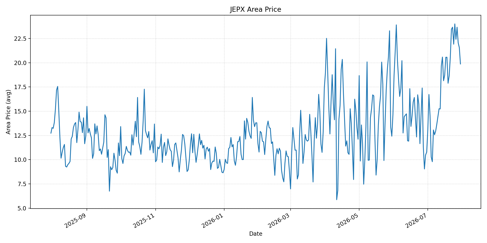
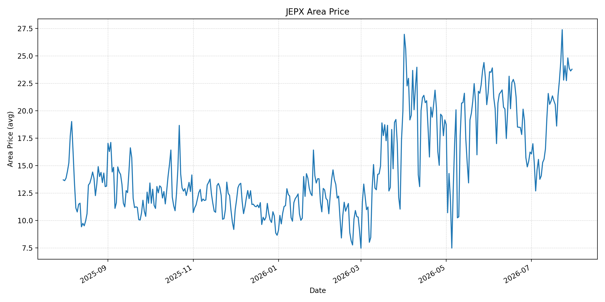
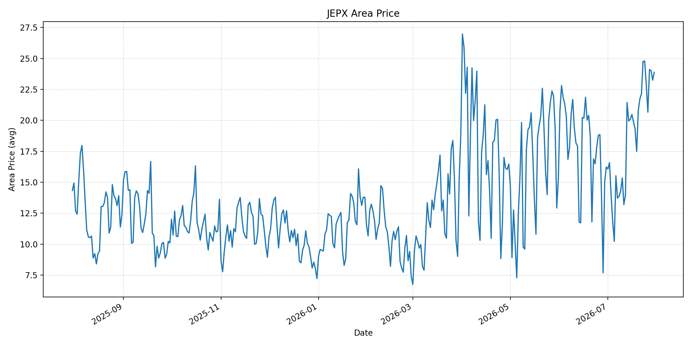
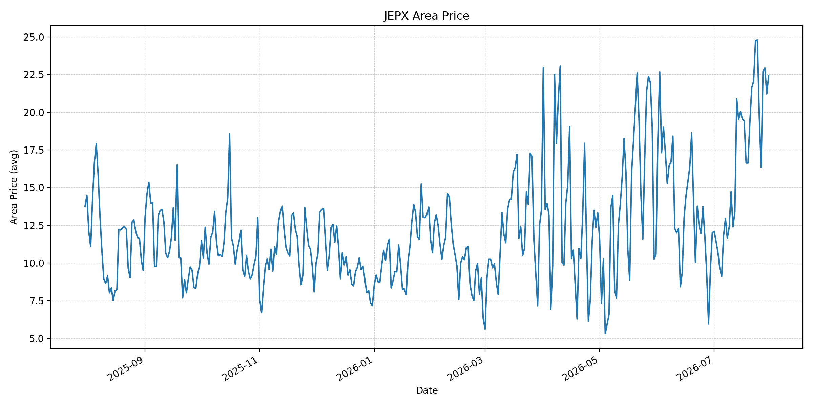
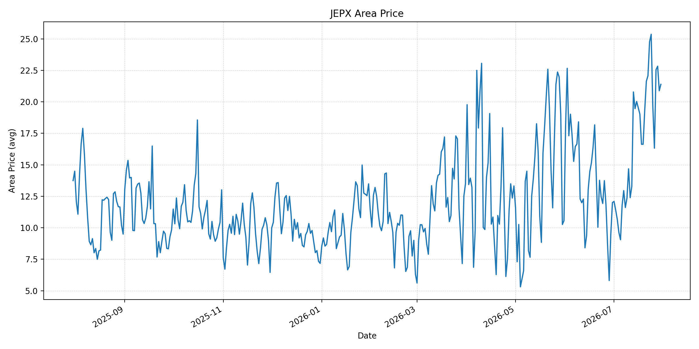
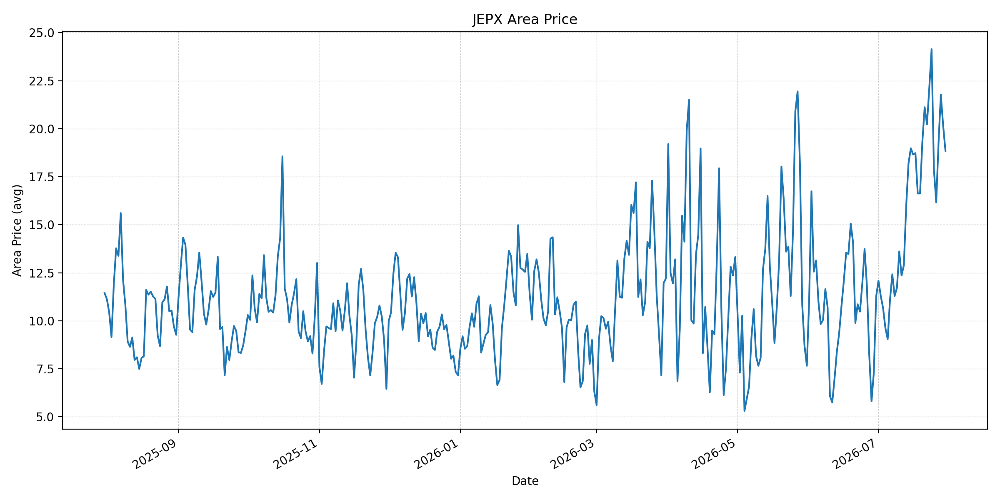
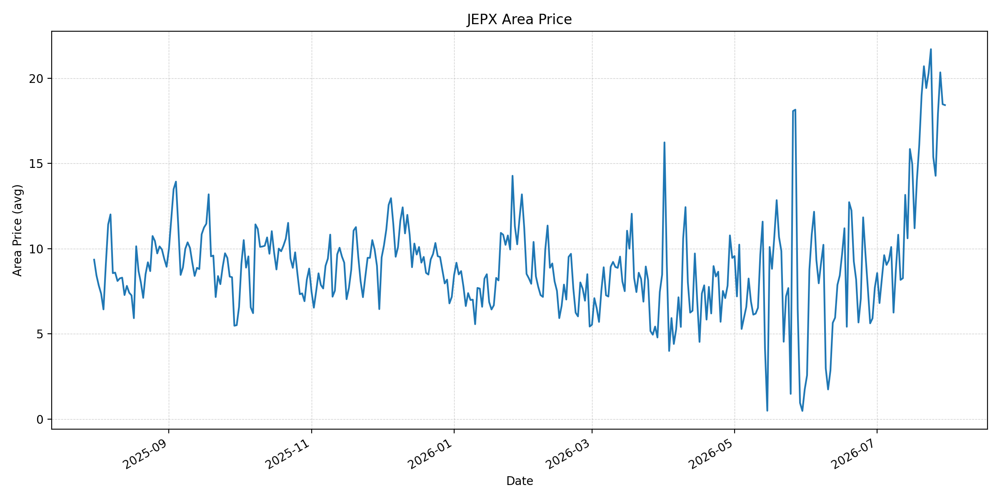
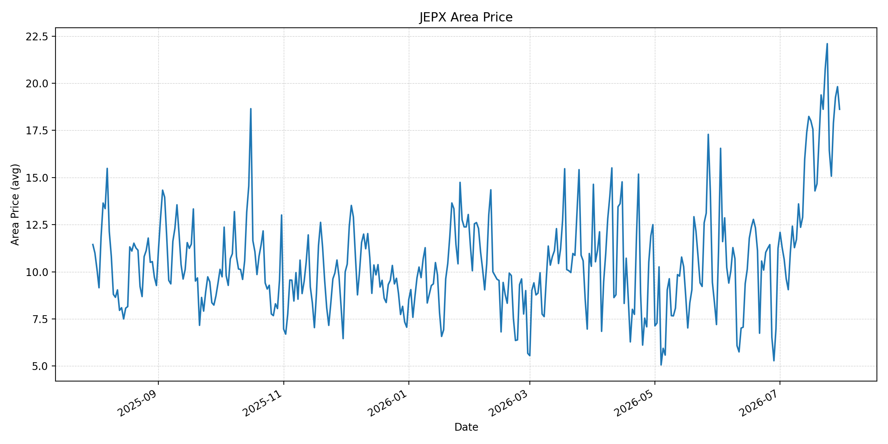
短期トレンド
JKMとJEPXシステムプライスの推移グラフ
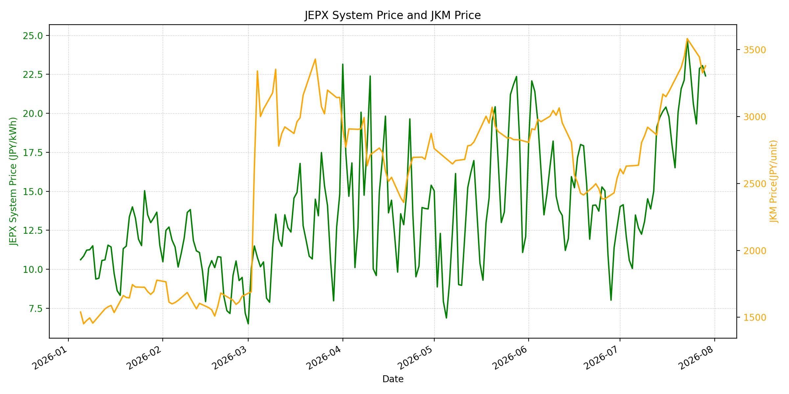
WTIの推移グラフ
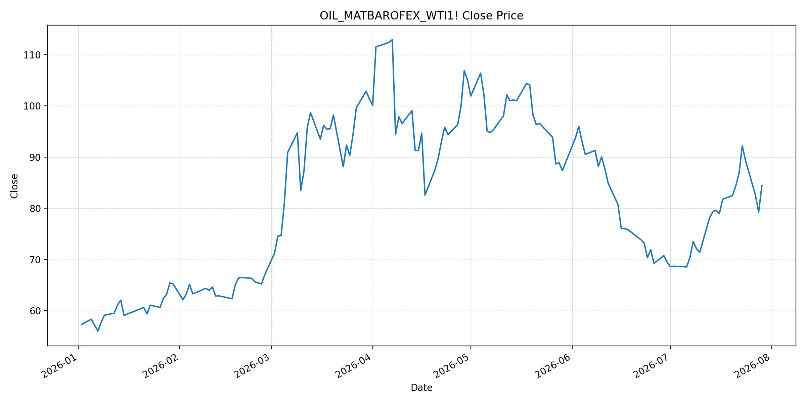
JEPXシステムプライス
JEPXは受渡日ベースの最新非空値で評価しています。最新値は 2026-07-30 分です。先週終値は 2026-07-23 時点の直近値、先月終値は 2026-06-30 時点の直近値で評価しています。
| エリア | 当日価格 | 前日価格 | 前日比（％） | 先週終値 | 先週比（％） | 先月終値 | 先月比（％） | 過去最高値 | 最高値比（％） |
|---|---|---|---|---|---|---|---|---|---|
| システム | 22.74 | 22.40 | 1.52 | 24.78 | -8.23 | 12.73 | 78.63 | 64.06 | -64.50 |
| 北海道 | 11.62 | 15.53 | -25.18 | 19.66 | -40.90 | 10.21 | 13.81 | 73.92 | -84.28 |
| 東北 | 19.87 | 21.56 | -7.84 | 23.66 | -16.02 | 10.78 | 84.32 | 84.92 | -76.60 |
| 東京 | 23.78 | 23.62 | 0.68 | 27.38 | -13.15 | 16.23 | 46.52 | 86.13 | -72.39 |
| 中部 | 23.88 | 23.25 | 2.71 | 24.76 | -3.55 | 16.23 | 47.13 | 52.06 | -54.13 |
| 北陸 | 22.43 | 21.20 | 5.80 | 24.76 | -9.41 | 12.01 | 86.76 | 46.48 | -51.75 |
| 関西 | 21.39 | 20.88 | 2.44 | 24.76 | -13.61 | 12.00 | 78.25 | 46.48 | -53.99 |
| 中国 | 18.85 | 20.16 | -6.50 | 22.11 | -14.74 | 11.26 | 67.41 | 46.48 | -59.45 |
| 四国 | 18.43 | 18.48 | -0.27 | 20.30 | -9.21 | 7.72 | 138.73 | 46.48 | -60.35 |
| 九州 | 18.62 | 19.82 | -6.05 | 20.75 | -10.27 | 11.24 | 65.66 | 40.54 | -54.07 |
LNG先物価格
最新値は 2026-07-29 の LNG(close) です。前日価格は直近非空値の 2026-07-28、先週終値は 2026-07-22 時点の直近値、先月終値は 2026-06-30 時点の直近値で評価しています。
| 当日価格 | 前日価格 | 前日比（％） | 先週終値 | 先週比（％） | 先月終値 | 先月比（％） | 過去最高値 | 最高値比（％） |
|---|---|---|---|---|---|---|---|---|
| 3380.00 | 3327.00 | 1.59 | 3447.00 | -1.94 | 2541.00 | 33.02 | 10319.00 | -67.24 |
石油先物価格
最新値は 2026-07-29 の OIL(close) です。前日価格は直近非空値の 2026-07-28、先週終値は 2026-07-22 時点の直近値、先月終値は 2026-06-30 時点の直近値で評価しています。
| 当日価格 | 前日価格 | 前日比（％） | 先週終値 | 先週比（％） | 先月終値 | 先月比（％） | 過去最高値 | 最高値比（％） |
|---|---|---|---|---|---|---|---|---|
| 84.46 | 79.26 | 6.56 | 86.83 | -2.73 | 69.50 | 21.53 | 123.70 | -31.72 |
ニュース
イラン情勢に関するニュース
- 2026年7月30日、APは、イランが米軍部隊に対するミサイル攻撃を再開し、米国とサウジアラビアがイラン支援民兵を空爆したと報じました。短期間の小康状態は崩れ、地域紛争が再拡大するリスクが高まっています。 参照: AP, 2026-07-30
- APは同じ記事で、フーシ派によるサウジ施設攻撃やバブエルマンデブ海峡付近の封鎖圧力にも触れています。ホルムズ海峡だけでなく、周辺の親イラン勢力もエネルギー輸送リスクを押し上げています。 参照: AP, 2026-07-30
ホルムズ海峡経由の石油・LNGに関するニュース
- WSJは、イランのミサイル攻撃再開で原油先物が急反発し、WTIが84.46ドル、Brentが90.74ドルまで上昇したと報じました。ホルムズ経由の原油・LNG輸送に対するリスクプレミアムが再び乗っています。 参照: WSJ, 2026-07-30
- APは、イランがホルムズ海峡の共同管理案を拒否し、戦前の自由航行には戻らない姿勢を示していると報じました。通航権限と料金を巡る対立は、LNG・原油双方の航行正常化を遅らせる要因です。 参照: AP, 2026-07-30
ホルムズ海峡経由でない石油・LNGに関するニュース
- MarketWatchは、サウジアラビアがホルムズ回避のためエジプトのSidi Kerir港やSUMEDパイプラインを使う新ルートに依存していると報じました。ただし、この迂回は20〜30日の追加日数と高い船腹費用を伴います。 参照: MarketWatch, 2026-07-30
- Guardianは、バブエルマンデブ海峡の封鎖リスクがアジアのエネルギー危機を悪化させ、日本や韓国など中東依存の高い需要家に輸送費・保険料の上昇をもたらしていると報じました。 参照: Guardian, 2026-07-28
日本国内のイラン戦争に関係するニュース
- 過去24時間で、JEPX制度、国内電力需給ルール、または日本政府のイラン戦争関連対策を直接変更する主要な新規公表は確認できませんでした。
- 関連する国内材料として、JOGMECは7月27日に、7月20〜24日の北東アジアJKMが中東緊張と供給不安で上昇し、7月24日時点でも低い22ドル台/MMBtuにとどまったと整理しました。また、経済産業省は石油製品備蓄と調達先多様化を検討する作業部会を7月24日に設置しています。 参照: JOGMEC, 2026-07-27 / Jiji Press / Nippon.com, 2026-07-24
インサイト
ニュース事項による日本の電力市場への影響（短期：数日〜1週間）
- JEPXシステムプライスは 22.74 円/kWhで前日比 1.52%、先週比 -8.23% です。週次では落ち着いたものの先月比は 78.63% 高く、米・イラン衝突再燃による燃料プレミアムは短期価格を下支えします。
- OILは 84.46 と前回比 6.56%、LNGは 3380.00 と前回比 1.59% です。WSJが報じた油価急反発と、ホルムズ共同管理案の不透明さを踏まえると、数日〜1週間は火力燃料コストの下振れ期待が後退します。
- 東京は 23.78 円/kWh、中部は 23.88 円/kWh、北陸は 22.43 円/kWhと高めです。北海道は前日比 -25.18% と下げましたが、全国平均は上昇しており、地域需給より燃料リスクの影響が残りやすい局面です。
ニュース事項による日本の電力市場への影響（長期：1ヶ月〜半年）
- LNGは先月比 33.02%、OILは 21.53% と、6月末比ではなお高水準です。ホルムズ航行ルールが固まらず、紅海側の迂回も高コスト化しているため、1ヶ月〜半年では燃料調達・保険・船腹コストが電力価格に残りやすいです。
- JEPXシステムは先月比 78.63%、東北は 84.32%、四国は 138.73% 上昇しています。国内で制度変更は確認されませんが、石油製品備蓄と調達先多様化の検討は、中期的な安定供給コストが増していることを示します。
- 過去最高値比ではシステム -64.50%、LNG -67.24%、OIL -31.72% と歴史的ピークからは距離があります。ただし、ホルムズ・バブエルマンデブの二重リスクが続く限り、日本の電力市場では燃料価格反落の恩恵が遅れて出る可能性があります。